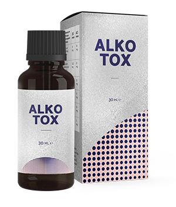

Alkotox
NOVATORIŠKAS SPRENDIMAS
KOVOJE SU PRIKLAUSOMYBE
JŪSŲ GYVENIMAS
BE ALKOHOLIO!
Mesti gerti dabar NĖRA PROBLEMA!
- Šalina psichologinę trauką
- Padeda išvengti depresijos
- Minimali daugiadienių išgertuvių tikimybė
NAUJA KAINA:
SENA KAINA
IKI AKCIJOS PABAIGOS:

KAS TAI Alkotox?
-
PILNAS ATSIKRATYMAS nuo alkoholizmo, nepriklausomai nuo stadijos!
-
Išlaisvina nuo stiprių išgertuvių
PER 24 VALANDAS -
PADEDA IŠVENGTI depresijos ir niūrumo
EFEKTYVUMĄ PATVIRTINO: 3 564 505
KAIP VEIKIA Alkotox
-
PILNAS ATSIKRATYMAS
nuo alkoholinės priklausomybės -
IŠLAISVINIMAS nuo ilgų išgertuvių
-
GRĄŽINA normalų gyvenimą be depresijų
-
PADEDA IŠVENGTI
pakartotinų
išgertuvių
-
ATSTATO SVEIKATĄ
-
IŠVALO оrganizmą nuo nuodingų medžiagų ir toksinių
-
NORMALIZUOJA kepenų ir inkstų funkciją
-
Nekenksmingas sveikatai
100% NATŪRALI SUDĖTIS